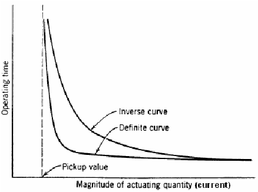
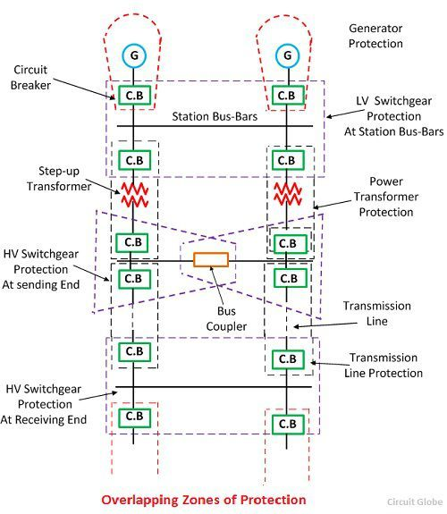

🛡️ Power System Protection
This section focuses on protecting electrical equipment and systems from faults and abnormal conditions to ensure system reliability and safety.
1️⃣ Purpose of Protection
- Minimize damage to equipment
- Ensure personnel safety
- Isolate faulty sections with minimal service disruption
- Maintain power system stability
🧠 2. Protection System Components
- CTs and VTs: Step-down current and voltage for relays
- Protective Relays: Detect fault conditions and initiate circuit breaker trips
- Circuit Breakers: Interrupt fault current
- Communication Channels: For pilot protection schemes
💥 3. Types of Faults
- Symmetrical: Three-phase fault — rare, but severe
- Unsymmetrical: Single line-to-ground (SLG), line-to-line (LL), double line-to-ground (DLG)
SLG is the most common fault in power systems.
🔌 4. Protection Schemes
- Overcurrent Protection: Simple, uses time-current characteristics
- Distance Protection: Based on impedance between fault and relay
- Differential Protection: Compares incoming and outgoing currents
- Pilot Relaying: Uses communication for fast remote fault clearing
📊 5. Relay Characteristics

Relays are tuned to operate within set curves to coordinate with breakers and other relays.
🔄 6. Coordination of Protection
Ensures only the faulty section is isolated while others remain energized. Example: Fuse-backup coordination in radial feeders.
📉 7. Circuit Breaker Types
- Air Blast CB: Used in high voltage outdoor substations
- Oil CB: Arc extinguished in oil
- SF₆ CB: Superior dielectric gas extinguishes arc
- Vacuum CB: Ideal for medium voltage; low maintenance
🎯 8. Sample Protection Schemes
- Transformer: Differential + Buchholz relay
- Transmission Line: Distance + pilot protection
- Generator: Stator ground, rotor earth, loss of excitation, reverse power

📘 Quiz
Q1: What is the main goal of a protective relay?
Answer: Detect abnormal conditions and initiate circuit breaker trip.
Q2: Which type of fault is most common?
Answer: Single Line-to-Ground (SLG) fault.
Q3: How does differential protection work?
Answer: It compares current entering and leaving equipment to detect faults.
← Back to Power track